Credentials
Certifications

AI Fluency: Framework & Foundations
Anthropic · Apr 2026
Teaching AI Fluency
Anthropic · Apr 2026

B.S. Computer Science
New Jersey Institute of Technology · 2023
I don't trust a fix until I know why it works.
Production agents that close real engineering bottlenecks — encoding a team's unwritten SQL conventions, auditing code against WCAG rules. Three years shipping software is what makes them hold up outside a demo.
A bit more
Most of my team treats AI tools as autocomplete with extra steps. I think they're closer to a junior engineer who needs a spec, a review process, and someone willing to push back — so that's how I build every agent I ship. It's not the popular take internally yet; I'm one of a handful of developers actually pushing the initiative forward while most others wait and see.
I also mentor a developer I hired through a university capstone program I led — he's a year into the job now, and I still review his work the way I'd want mine reviewed: explain the reasoning, not just hand over the fix.
Background
Tracked progress across 20+ students and delivered structured feedback to parents monthly. Students averaged a 30% improvement in programming skills by internal metrics.
Converted the Tableau JS API into reusable React components to reduce integration overhead. Also built a React app for testing and demoing API endpoints, which accelerated bug identification across the team.
Credentials
AI Fluency: Framework & Foundations
Anthropic · Apr 2026
Teaching AI Fluency
Anthropic · Apr 2026
B.S. Computer Science
New Jersey Institute of Technology · 2023
Selected work
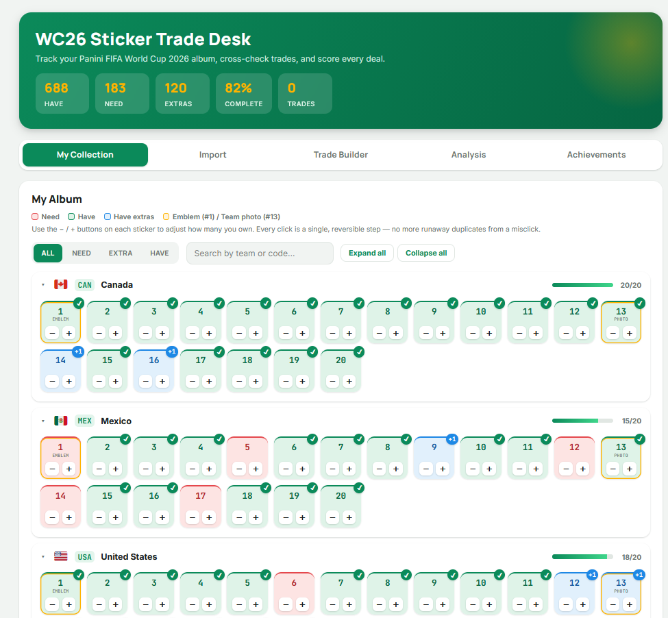
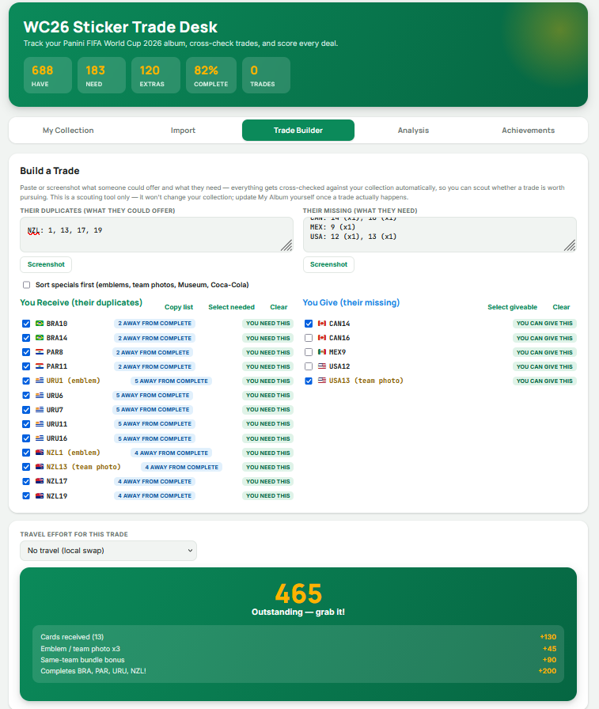
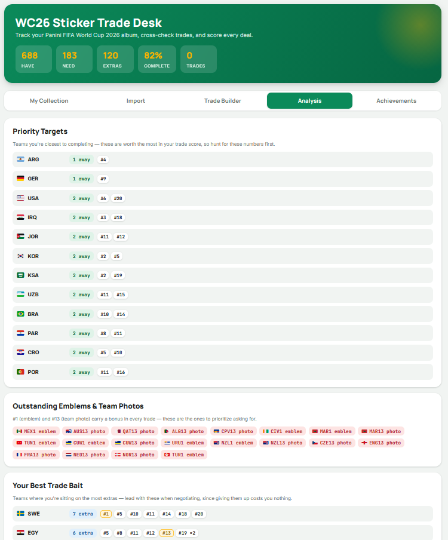
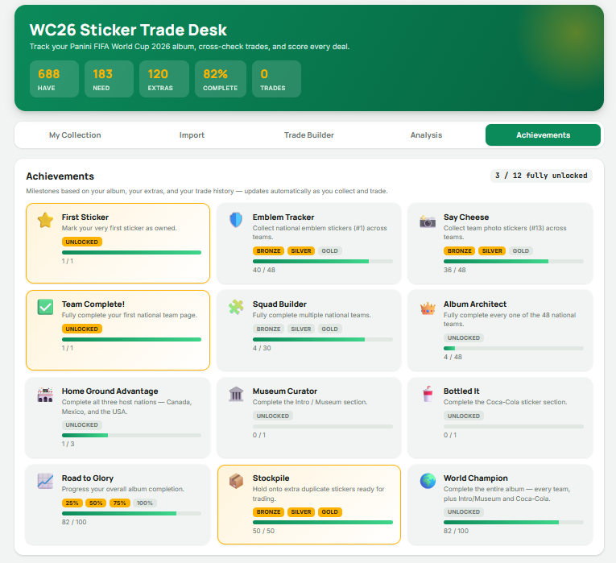
Built entirely through Claude artifacts, without ever looking at the underlying code — describe what you want, see it live, ask for changes until it's right. Scan your World Cup sticker collection, see what's missing, and check whether a proposed trade is actually worth making.
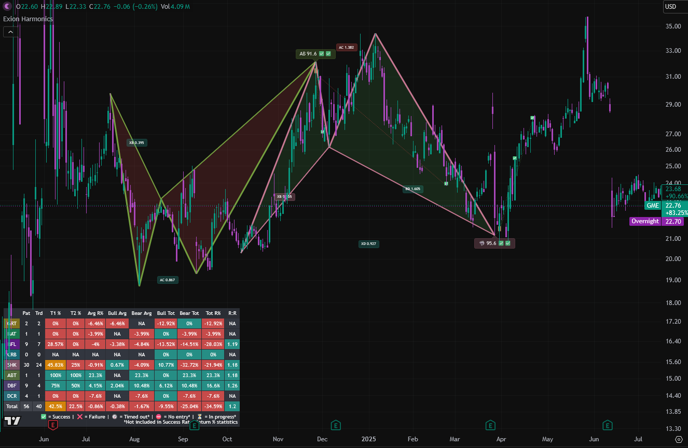
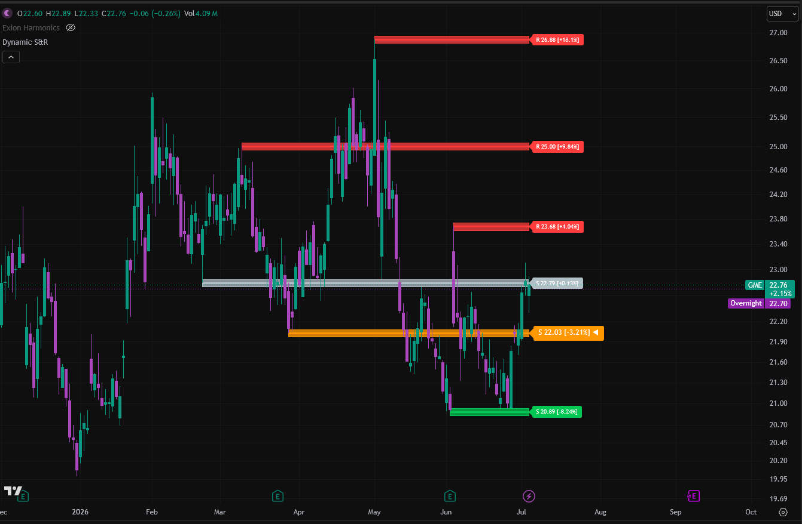
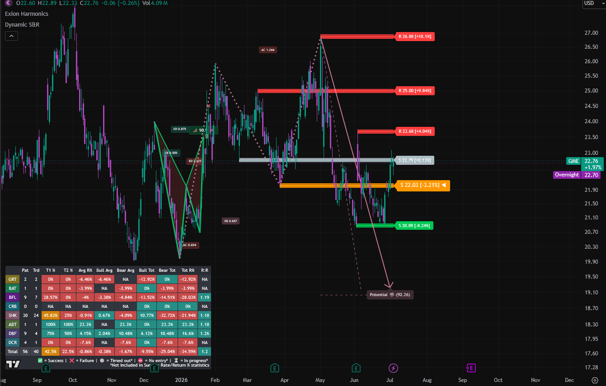
Built a custom Claude Skill for Pine Script development — it knows the syntax and conventions, flags likely bugs before they ship, and tracks fixes across sessions. Used it to build a suite of indicators, including a harmonic pattern detector and a dynamic support/resistance tool.
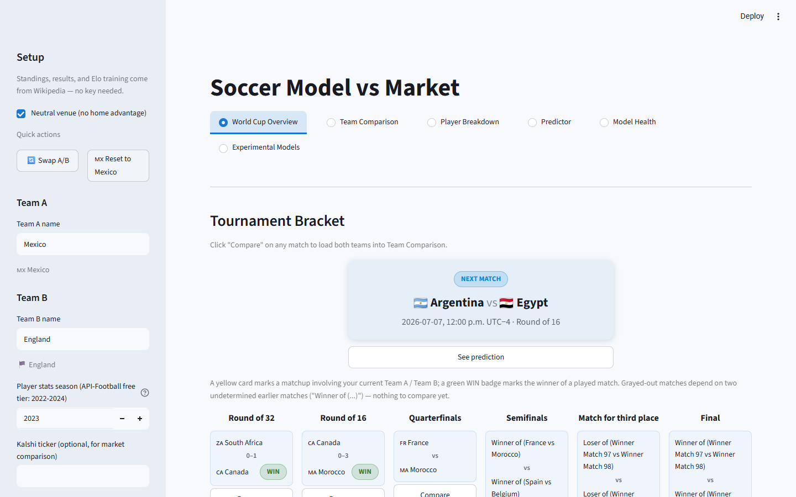
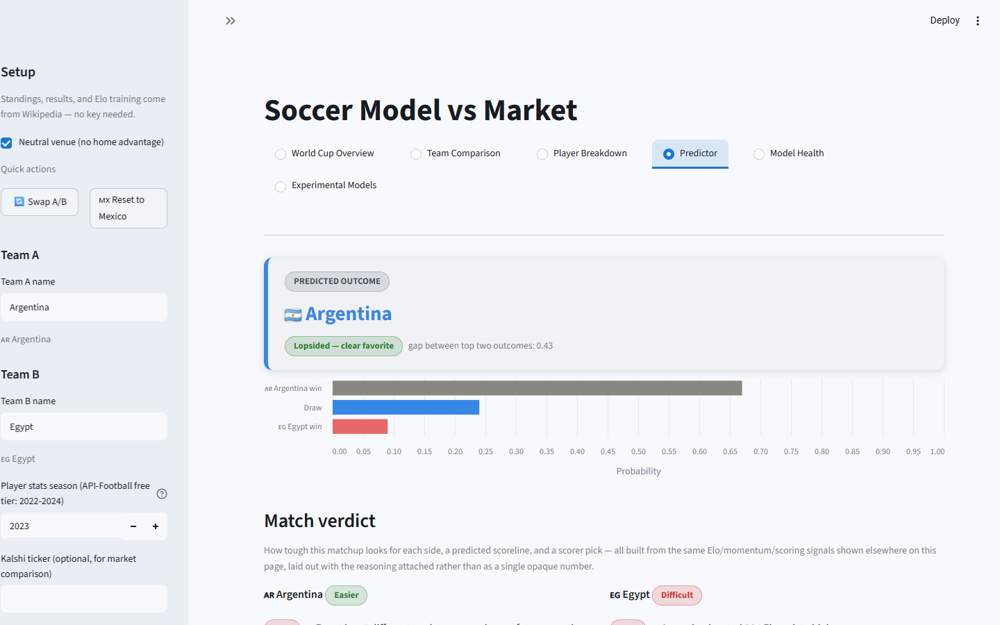
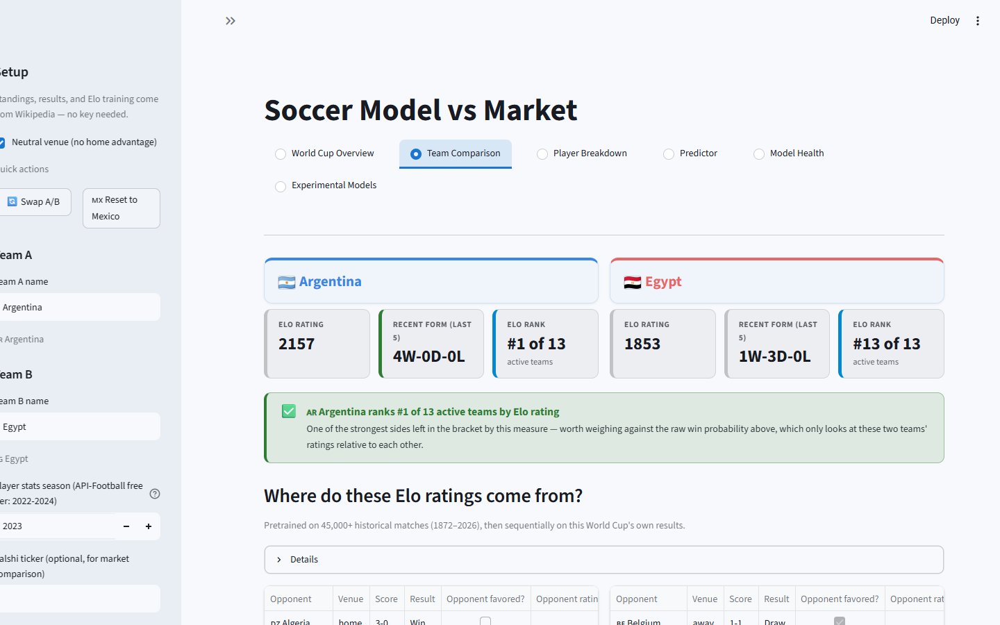
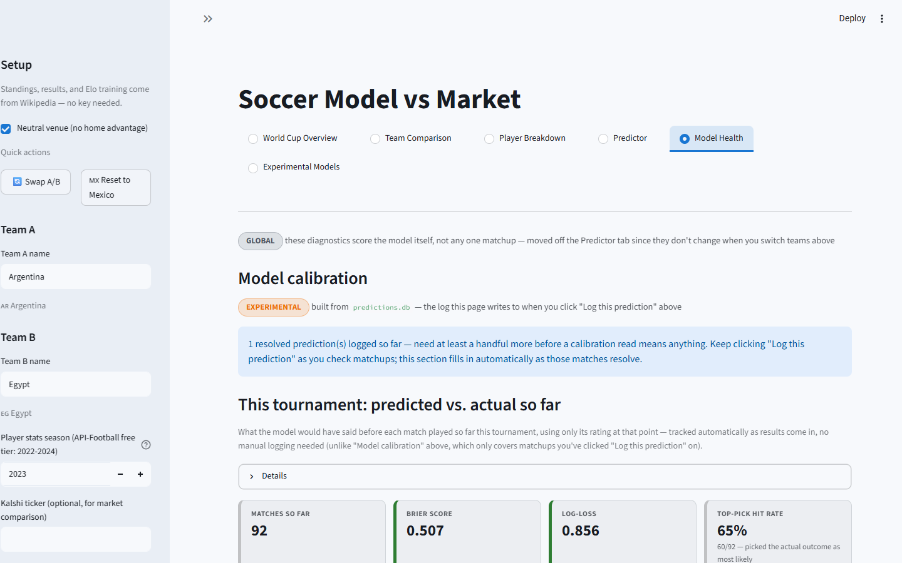
Same shape of project as the UFC predictor, but backed by real APIs this time — the constraint was free-tier data caps, not scraping. Used this one to test how far a mostly hands-off, Claude-directed build could go, guiding it only at the moments that mattered.
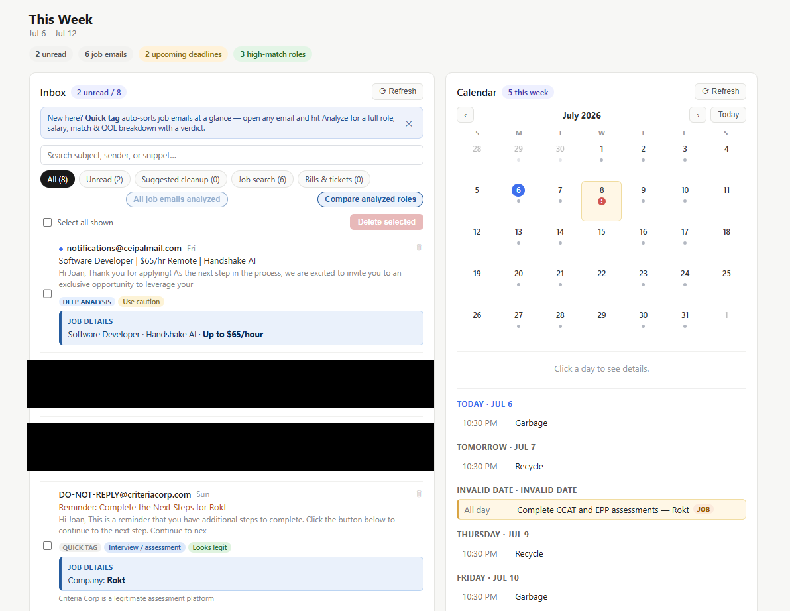
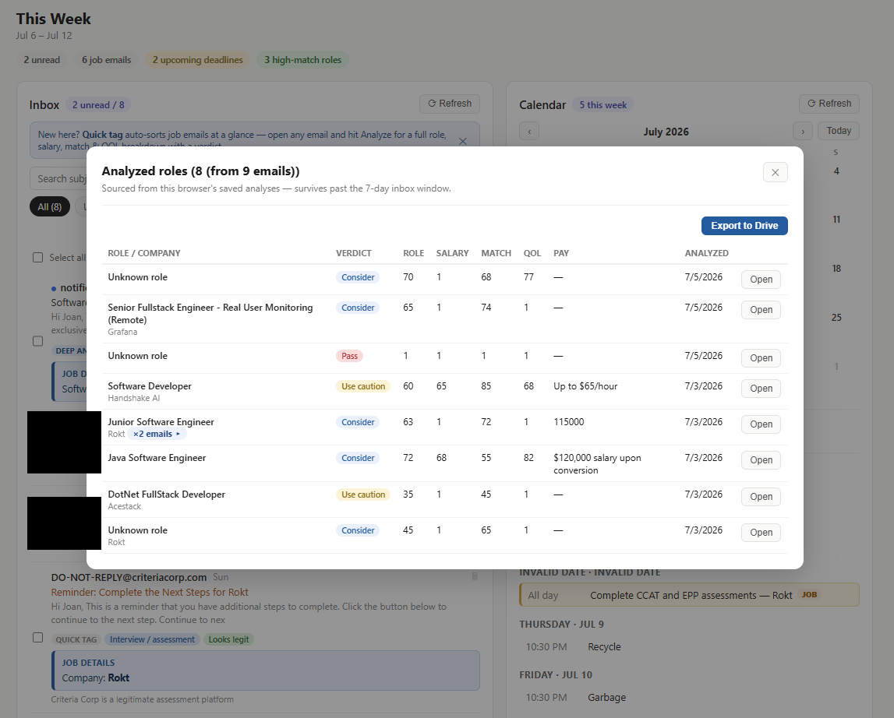
A live Claude artifact connected through connectors to email, calendar, and Google Drive — surfaces the job-related messages buried in an inbox and rates them against a resume, instead of combing through email by hand.
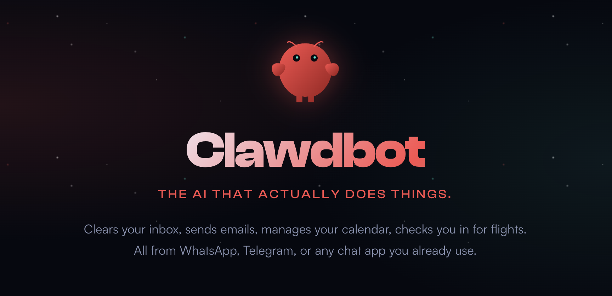
A fully local AI agent run through OpenClaw on a Mac Mini, reachable from my phone over Discord. Tested several Ollama models to balance hardware limits against answer quality, then built it out to handle email, calendar, and trading-setup questions grounded in Bulkowski's chart-pattern rules.
An idea that stalled for years on a data problem — the UFC site has no API, and its fight-record URLs aren't structured in any way you can parse directly. Built with Claude Code, entirely inside a Jupyter notebook, applying data-science methods from college.
Senior devs estimated ~50 hours per system for screen-reader compliance. Built an agent instead — it reviews code file by file, converts to semantic HTML, adds ARIA labels, and checks JS for screen-reader UX issues like focus handling after a form submits.
Templated the codebase's unwritten SQL conventions — audit logging, naming, history tables with trigger generation on new tables — so a GitHub Copilot agent applies them automatically instead of me piecing them together by hand. Ask it to add a column and it doesn't just write the ALTER statement; it adds the logging and naming conventions that go with it.
Articles
Learning to ask for help, then learning to be asked Editor's pick
Building a local AI agent from scratch with Ollama and OpenClaw
Owning a legacy app across four framework migrations
How I built a harmonic pattern detector in Pine Script
An ADA compliance agent that won't touch code without asking
Teaching the ADA agent to write its own patch files
Teaching an agent your codebase's unwritten SQL rules
Testing the limits of vibe coding with Claude
A few years of watching AI go from confidently wrong to actually useful
How I ended up building the company's first MCP server
Redesigning our EMR's UI without a frontend team
Open to full-time roles, contract work, and interesting problems. Reach out directly.